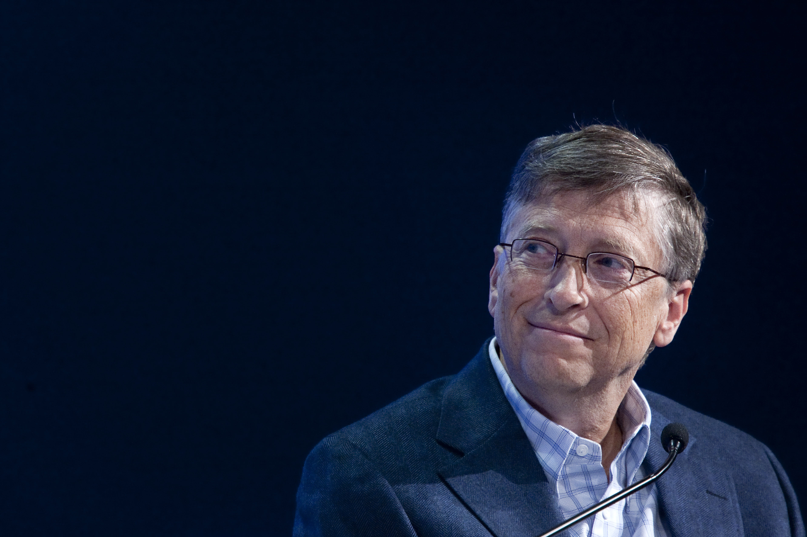

Hi i'm souvik sarker. i'm from bangladesh . i'm designing website's
for big and small inc. for 3 year's —

Microsoft co-founder Bill Gates said that people are now realizing that a viral outbreak similar to COVID-19 will likely happen "every 20 years or so."
Speaking to the Financial Times earlier this month, Gates said that COVID-19 was the "biggest event that people will experience in their entire lives" and said world leaders and global policymakers have "paid many trillions of dollars more than we might have had to if we'd been properly ready."
The 67-year-old billionaire has been warning about the risk of a pandemic disease for years, stating that a global health crisis like coronavirus could wipe out 30 million people in less than a year.
Microsoft co-founder Bill Gates said that this coronavirus pandemic was the "biggest event that people will experience in their entire lives," and warned that a viral outbreak will likely happen "every 20 years or so." Gates discussed the global fight against the novel coronavirus with the Financial Times via Skype on April 2. FT posted the interview and transcript online on April 8. He said world leaders and global policymakers have "paid many trillions of dollars more than we might have had to if we'd been properly ready." "This is the biggest event that people will experience in their entire lives," Gates told FT. He said that in response to this outbreak, future governments will have "standby diagnostics, deep antiviral libraries, and early warning systems."
Microsoft co-founder Bill Gates said that this coronavirus pandemic was the "biggest event that people will experience in their entire lives," and warned that a viral outbreak will likely happen "every 20 years or so." Gates discussed the global fight against the novel coronavirus with the Financial Times via Skype on April 2. FT posted the interview and transcript online on April 8. He said world leaders and global policymakers have "paid many trillions of dollars more than we might have had to if we'd been properly ready." "This is the biggest event that people will experience in their entire lives," Gates told FT. He said that in response to this outbreak, future governments will have "standby diagnostics, deep antiviral libraries, and early warning systems."
Microsoft co-founder Bill Gates said that this coronavirus pandemic was the "biggest event that people will experience in their entire lives," and warned that a viral outbreak will likely happen "every 20 years or so." Gates discussed the global fight against the novel coronavirus with the Financial Times via Skype on April 2. FT posted the interview and transcript online on April 8. He said world leaders and global policymakers have "paid many trillions of dollars more than we might have had to if we'd been properly ready." "This is the biggest event that people will experience in their entire lives," Gates told FT. He said that in response to this outbreak, future governments will have "standby diagnostics, deep antiviral libraries, and early warning systems."